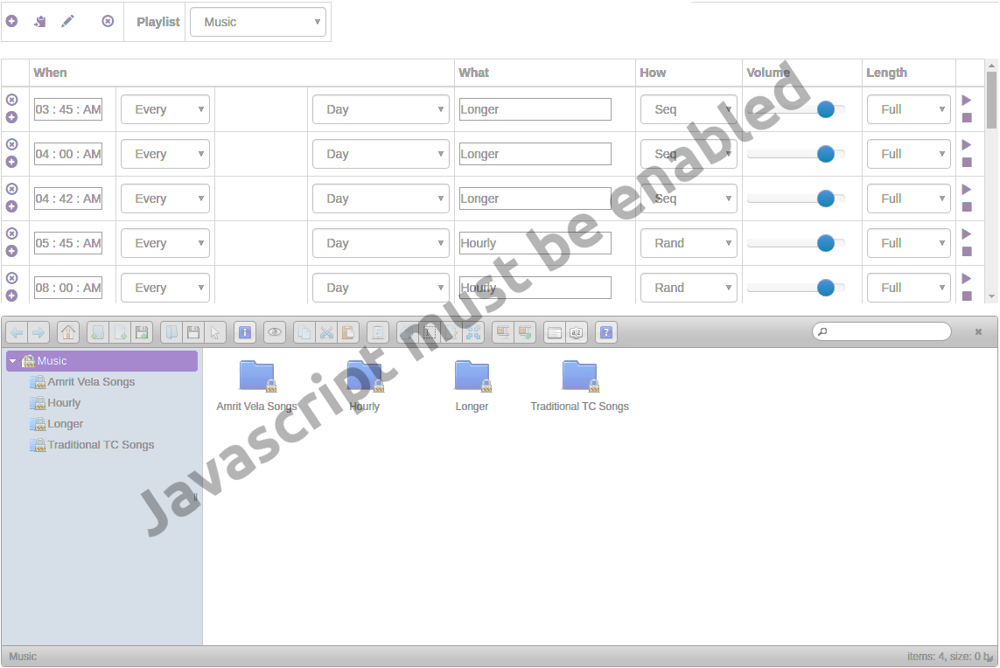

The left panel contains playlist management controls:
Each row in the playlist table represents a scheduled audio event:
| Column | Description |
|---|---|
| Time | When to play (12-hour format). Click to open the time picker. |
| Schedule | Every plays on selected days, Except skips selected days, Manual disables automatic playback. |
| Week | Restrict to 1st, 2nd, or 3rd week of the month (visible when a specific day is selected). |
| Day | Daily or a specific day of the week. |
| Content | File or folder path. Select from the file browser. |
| Mode | Single plays the file, Random or Sequential for folders. |
| Volume | Playback volume (0-99). Use the slider or scroll wheel. |
| Length | Full plays the entire track, or limit to 10-180 seconds with fade-out. |
| Actions | Preview (play) or Stop the item. |
Use the + and - icons in the first column to add or remove rows.
To assign audio to a playlist item:
For folders, choose Random or Sequential playback mode.
Click Manage Music in the Music Files panel (or Manage in the sound picker) to work with the files on the server:
Files can only be changed from the local network. A marks items Traffic Control can't change because they were copied in by another user; these are normally fixed automatically within a minute.
The System Mode toggle determines where audio plays:
When in System mode, the Preview Mode toggle controls where preview playback occurs.
Chime: Enter "Chime" in the Content field to play the built-in chime sound. The Length setting controls the duration before the closing chime plays.
